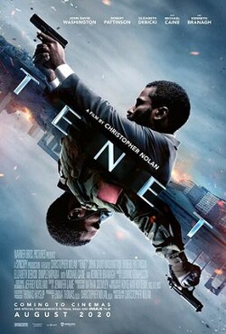

Tenet

Release Date: 3 September 2020
Director: Christopher Nolan
Main Cast: John David Washington, Robert Pattinson, Elizabeth Debicki
IMDb Rating: 7.3/10 ⭐
Age Rating: PG-13 (13+)
A protagonist is recruited into a secret organization called "Tenet" to prevent World War III by manipulating the flow of time. It's a complex, visually spectacular, and mind-bending espionage thriller.
My Advice: Watch it for the incredible action sequences and the intellectual challenge it presents. You'll need to pay close attention to every detail!
• The film's title "Tenet" is a palindrome, meaning it reads the same forwards and backwards. This reflects the film's theme of time inversion.
• Christopher Nolan spent more than five years writing and perfecting the script for this movie.
• The actors actually learned to perform stunts in reverse for some scenes. John David Washington trained to drive a car in reverse while looking over his shoulder.
• The film was delayed multiple times due to the COVID-19 pandemic and became one of the first major Hollywood blockbusters to release in theaters during the pandemic.